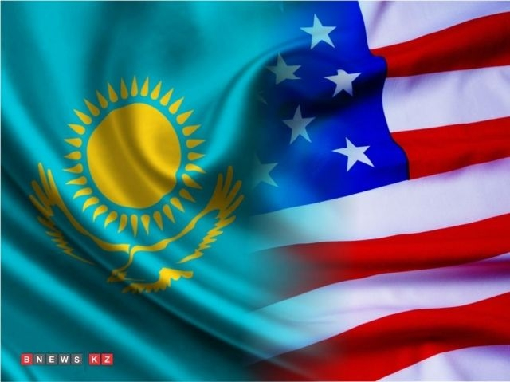

Kazakhstan and US discussed cooperation in defense and military education
Published: September 4, 2015, 10:16 (04:16 GMT)
First Deputy Minister of Defense, First deputy Defence Minister - Chief of the General Staff of the Kazakh Armed Forces Colonel General Saken Zhasuzakov met with Assistant Secretary of Defense David Shire at the Ministry of Defence of the Republic of Kazakhstan in Astana, BNews.kz reports.
During the meeting, representatives of the defense ministries of the two countries discussed cooperation in the sphere of defense and security, peacekeeping, military education, Special Forces training, as well as important aspects of peace and stability. According to the press-service of the agency, conducting an operation, especially of local nature, role and importance of the Special Operations Forces have significantly increased in modern conditions, the range of their application expanded. In this regard, the priorities of the Armed Forces of Kazakhstan are the development Special Forces. In addition, the parties discussed the training of Kazakh servicemen in military educational institutions of the USA, the involvement of the American military-educational institutions in collaboration with the universities of Kazakhstan, as well as gaining experience and modern teaching methods.
Published by: bnews